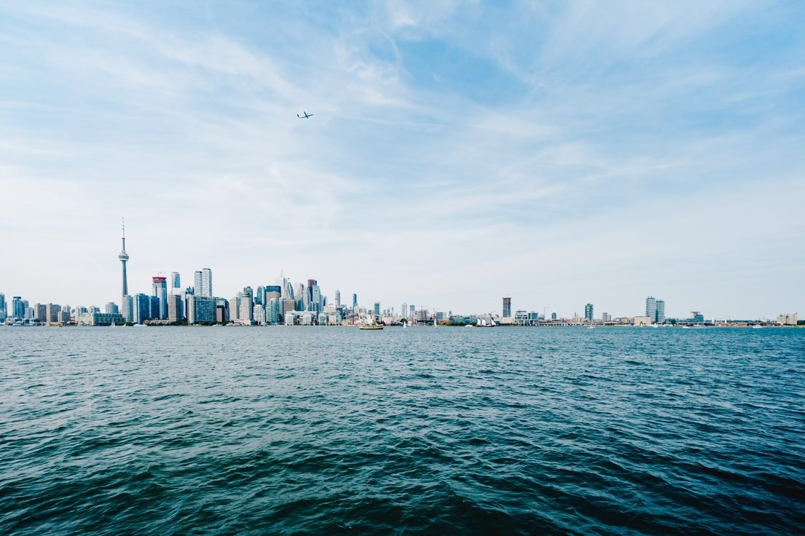

Average temperatures in the Arctic are rising twice as fast as they are elsewhere on earth, and the world's ice sheets are melting fast. This not only has grave consequences for the region's people, wildlife, and plants; its most serious impact may be on rising sea levels. By 2100, it's estimated our oceans will be one to four feet higher, threatening coastal systems and low-lying areas, including entire island nations and the world's largest cities, including New York, Los Angeles, and Miami as well as Mumbai, Sydney, and Rio de Janeiro.

Higher Sea Levels
×
WRONG ANSWER!
According to the Intergovernmental Panel on Climate Change's 2014 assessment, many land, freshwater, and ocean species are shifting their geographic ranges to cooler climes or higher altitudes, in an attempt to escape warming. They're changing seasonal behaviors and traditional migration patterns, too. And yet many still face "increased extinction risk due to climate change." Indeed, a 2015 study showed that vertebrate species—animals with backbones, like fish, birds, mammals, amphibians, and reptiles—are disappearing 114 times faster than they should be, a phenomenon that has been linked to climate change, pollution, and deforestation.
Polar Bear Extinction
×
CORRECT ANSWER!
Rising temperatures also worsen air pollution by increasing ground level ozone, which is created when pollution from cars, factories, and other sources react to sunlight and heat. Ground-level ozone is the main component of smog, and the hotter things get, the more of it we have. Dirtier air is linked to higher hospital admission rates and higher death rates for asthmatics. It worsens the health of people suffering from cardiac or pulmonary disease. And warmer temperatures also significantly increase airborne pollen, which is bad news for those who suffer from hay fever and other allergies.